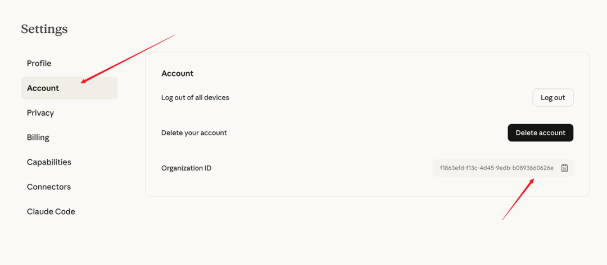
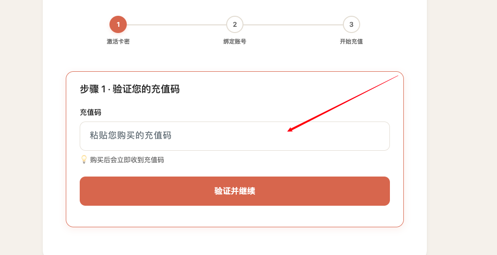
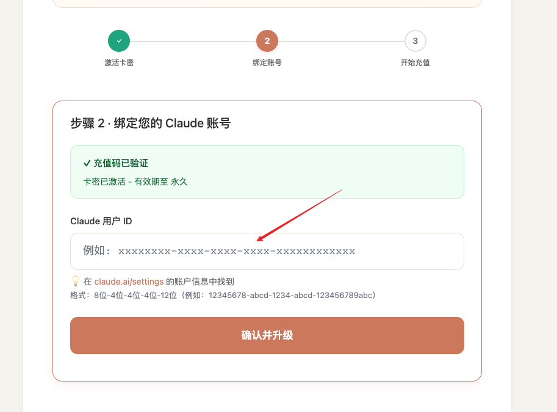

从 0 到熟练：这篇就够了。顺便说一句：上周 Anthropic 那波更新，有点“把门直接踹开”的感觉。
这篇指南的目标很简单：把你从“摸索学习曲线”直接带到“立刻产出结果”。 即使你已经用 Claude 很久了，也很可能还能从中拿到新的用法和效率提升点。
目录（建议先收藏）
Claude 到底强在哪？ 新手最容易翻车的点：提示词 三段式提示词：从“泛”到“可直接用” 上下文管理：为什么你越聊越难用 模型怎么选：别再一把梭哈 必装的基础功能：把 Claude 配到“能干活” 进阶杀器：Cowork / Claude Code / Skills / Plug-ins 给你一套“直接复制就能用”的模板
1.Claude 到底强在哪？
一句话：Claude 更像“能把事做完”的 AI。很多工具擅长给建议，但 Claude 最近的工具链越来越像是在说：
“别讲了，把任务丢过来，我来跑。”
你会明显感觉到它更擅长：
按你给的规则稳定输出（格式、语气、长度） 理解“话里话外”的语境 结合文件/项目背景持续工作（不需要每次从头解释）
开始之前，你需要先注册 Claude 账号。
是否订阅付费版——我建议上付费，但最终取决于你的预算与使用频率。
价格理解方式

Claude Pro 升级步骤
Claude 的风控主要针对 IP 和非本地信用卡。代充直接解决了支付端的“水土不服”，而且不需要你研究什么指纹浏览器，什么纯净 IP。
推荐自己一直在用的一个靠谱渠道(操作简单、秒到账)：https://fe.dtyuedan.cn/shop/ddm
升级步骤
登录你的 Claude 账号 (https://claude.ai)。 进入设置 → 账户信息 → 复制ID 
在代充平台，直接用微信/支付宝支付下单购买 Claude Pro 订阅卡密 
粘贴你刚才复制的账户 ID 
刷新 Claude 页面，就能看到尊贵的 Pro 标识了，Artifacts 随便用，次数限制也解除了。
2.新手最容易翻车的点：提示词
别把提示词想得很玄。它本质就是：你给同事下任务的方式。
你输入得越糊，Claude 输出就越像在“给你写作文”。 你输入得越清晰，它就越像在“交付成果”。
记住这条铁律：垃圾输入 = 垃圾输出。这也是为什么有人觉得 AI 很强，有人觉得 AI 很废——差别常常不在模型，在你怎么问。
3.新手必学：三段式提示词（直接拉满质量）
最省心、最好用的一种写法：三段式。
① 先给背景（Set the stage）
你是谁？你在做什么？目标是什么？ 让 Claude 立刻进入状态。
例：
我在做一个面向 Z 世代的营销落地页，产品是XXX，目标是提高注册转化。
② 再下任务（Define the task）
你要它做什么？越具体越好。
例：
帮我写一套页面文案，并给出页面结构：首屏、痛点、卖点、对比、FAQ、CTA。
③ 最后立规则（Specify rules）
你想要什么格式/语气/长度？
例：
语气年轻一点但别尬；用中文；总字数不超过800；每个模块用标题+要点；给3个不同风格版本。
三段式写完，你的输出会立刻从“能看”变成“能用”。 真的，别偷懒。
4.上下文管理：为什么你越聊越难用？
很多人用 AI 用着用着觉得“变笨了”，其实不是它变笨，是上下文被你聊脏了。
简单理解：对话越长，信息越杂，模型越难保持一致。 你会看到这些症状：
开始自相矛盾 忽略你之前说的规则 输出越来越冗长、越来越水 反应变慢
解决办法很“人话”——像你和同事开会一样：开久了就要做纪要，然后换一场会继续。
你可以直接对 Claude 说：
把我们目前的关键信息压缩成一份“工作摘要”（目标、背景、约束、已完成、下一步），然后我们开新对话继续。
另外三个小技巧也很关键：
能上传文件就上传文件（让它别靠猜） 给输出上限（比如500字、10条以内） 复杂任务分阶段（先结构→再填充→再润色）
5.模型怎么选：别再“默认最贵”
Claude 现在最大的问题不是“能不能做”，而是：你会不会选对模型。
我给你一个极简选法：
✅ Sonnet：日常主力（80% 用它）
快、稳、性价比高 写作、分析、头脑风暴、一般任务都行 你大多数工作直接从 Sonnet 开始就对了
✅ Opus：深度思考（难题再上）
复杂推理、多步问题、长研究、复杂代码 适合“错了代价大”的任务 代价：更慢、更耗额度 你可以理解为：需要它认真想的时候再叫它
✅ Haiku：快刀小活（轻任务用它）
最快、最便宜 适合小修小改、快速查找、轻量分类 别拿它做重型任务，它会很委屈
一句话总结：小活用 Haiku，日常用 Sonnet，难题用 Opus。
6.必装的基础功能：把 Claude 配到“能干活”
你想让 Claude 从“聊天工具”变成“生产力工具”，这几个功能建议直接配齐。
6.1 Connectors（连接器）
把 Claude 连到你常用工具。 这一步做完，它会更像“你的工作系统的一部分”，而不是孤立的聊天框。
6.2 Chrome 插件（很多人不知道，但超好用）

下载链接：https://chromewebstore.google.com/publisher/anthropic/u308d63ea0533efcf7ba778ad42da7390
浏览网页时随手让 Claude：
总结文章 抽要点 写邮件/评论/文案 把网页内容变成 Notion 结构笔记
对“信息焦虑型打工人”非常友好。
6.3 Style（统一输出风格）
你可以设定输出风格，让 Claude 永远用你喜欢的格式说话： 更短、更有条理、更像咨询报告，或者更像你团队的写作规范。

6.4 Projects（强烈建议开）
Projects 是我认为最“值”的功能之一： 你把背景资料、规则、文件一次放进去，以后在这个项目里开再多对话，它都默认懂你的上下文。

真实体验：你不再需要每次“从零解释”，它就像一直在同一个项目组里。
6.5 Research Mode（适合做“带引用”的深度研究）
你丢一个问题，它会先拆解，再查很多资料，最后给你一份引用齐全的报告。 如果你经常做内容、做竞品、做行业研究，这个功能非常香。

6.6 Claude App（想玩高级功能就得装）
很多高级能力只在桌面端更完整（比如后面的 Cowork）。
7.进阶杀器：效率质变的开始
如果说前面是“把 Claude 用顺”，那这一部分是“让 Claude 帮你工作”。
7.1 Cowork：让 Claude 在后台自动跑任务
你可以把 Cowork 理解成：Claude 的“行动模式”。它不只是回答，而是能拿着你的文件、按流程去执行。

适合：
一套重复流程（周报、资料整理、项目推进） 跨多个文件的任务（汇总、比对、输出报告） 你不想手动做的繁琐工作
7.2 Claude Code：写代码这块真的很顶
如果你写代码，Claude Code 的价值是：
不是只给你一段代码 而是能帮你把报错修掉、把项目跑起来、把结构理顺

对开发者来说属于“用了就回不去”。
7.3 Skills：把你的“高频提示词”变成一键按钮
Skills 很像你给 Claude 写的“快捷工作流”。

比如你每天都要做表格分析： 以前：每天重复写一大段 prompt 现在：做一个“表格分析 Skill”，以后一句话调用
更狠的是：你甚至可以让 Claude 帮你写 Skill：
帮我做一个 Skill：输入表格后，自动做异常检测、趋势总结、给行动建议，并输出为固定格式。
7.4 Plug-ins：把 Skills 组合成“岗位”
Skill 是“流程”，Plug-in 是“角色”。 一个 Plug-in 可以打包很多 Skills，让 Claude 直接扮演一个岗位，比如：
内容编辑 财务分析助理 法务初筛 市场研究员
你给它岗位目标，它按岗位交付。

8.给你一套“直接复制就能用”的 Claude 万能模板
你不用记那么多，直接复制这段，后面替换方括号就行：
Claude 万能三段式：
背景：我是[你的身份]，正在做[项目/任务]，目标是[目标]。相关背景信息是：[补充关键背景]。 任务：请你完成[具体要做的事]，并给出[你想要的输出内容]。 规则：请用[格式]输出；语气[语气]；长度不超过[限制]；必须包含[要点]；如果信息不足，请先问我3个最关键的问题再开始。
结语：怎么开始最省心？
如果你今天就要上手，我给你一条最稳的路径：
先用 Sonnet 跑日常任务 用 三段式提示词 固定输出质量 对话变长就 compact + 开新对话 然后开 Projects，把背景资料一次性丢进去 等你觉得“重复工作太多”了，再上 Skills / Cowork
你会发现：Claude 的正确用法不是“问问题”，而是“交任务”。